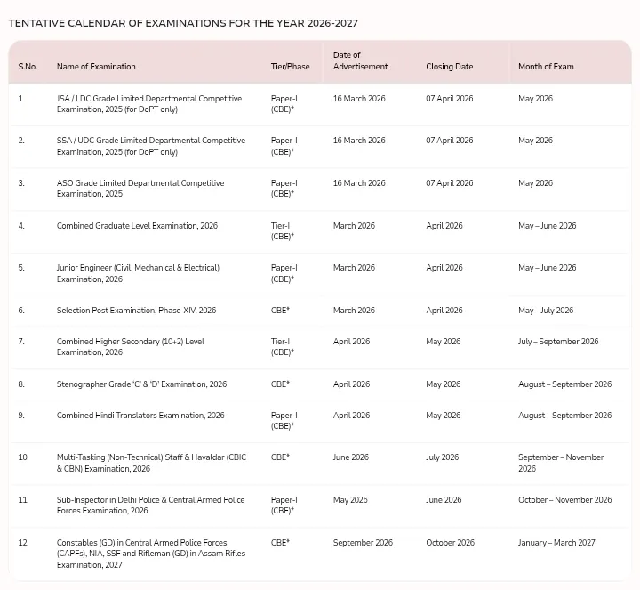

Staff Selection Commission (SSC) द्वारा जारी किए गए नए परीक्षा कैलेंडर में देश की प्रमुख भर्ती परीक्षाओं की संभावित अधिसूचना और परीक्षा तिथियों की जानकारी दी गई है। यह कैलेंडर उम्मीदवारों को अपनी तैयारी पहले से बेहतर तरीके से करने में मदद करेगा।

SSC द्वारा जारी कैलेंडर में प्रत्येक परीक्षा के लिए नोटिफिकेशन जारी होने का संभावित समय, ऑनलाइन आवेदन की अवधि तथा परीक्षा आयोजित होने का संभावित महीना दिया गया है। इससे अभ्यर्थी अपनी पढ़ाई का शेड्यूल पहले से तैयार कर सकते हैं। 01
SSC परीक्षा कैलेंडर सिर्फ संभावित तिथियों की सूची नहीं है, बल्कि यह उम्मीदवारों के लिए पूरे वर्ष की तैयारी की योजना बनाने का आधार भी होता है। कैलेंडर जारी होने के बाद अभ्यर्थी यह तय कर सकते हैं कि किस परीक्षा के लिए कब से तैयारी शुरू करनी है और आवेदन की अंतिम तिथि से पहले सभी आवश्यक दस्तावेज तैयार रखने हैं।
ध्यान रखें कि SSC Calendar में दी गई तिथियाँ संभावित (Tentative) होती हैं। किसी भी परीक्षा की अंतिम तिथि, आवेदन प्रक्रिया या परीक्षा कार्यक्रम में आवश्यकता पड़ने पर बदलाव किया जा सकता है। इसलिए उम्मीदवारों को सलाह दी जाती है कि वे अंतिम पुष्टि के लिए हमेशा SSC की आधिकारिक वेबसाइट पर जारी नवीनतम नोटिस अवश्य देखें।
यदि आप SSC CGL, CHSL, MTS, GD Constable, CPO, JE या अन्य SSC परीक्षाओं की तैयारी कर रहे हैं, तो नए परीक्षा कैलेंडर के अनुसार अपनी पढ़ाई की रणनीति बनाना सबसे अच्छा रहेगा। नियमित अभ्यास और सही समय प्रबंधन सफलता की कुंजी है।
यदि आप SSC की किसी भी परीक्षा की तैयारी कर रहे हैं, तो परीक्षा कैलेंडर में दी गई संभावित तिथियों के अनुसार अपनी तैयारी शुरू करें। आधिकारिक नोटिफिकेशन जारी होने का इंतज़ार करने के बजाय पहले से तैयारी करने वाले उम्मीदवारों के सफल होने की संभावना अधिक रहती है।
Selection Pro पर आपको SSC से संबंधित नवीनतम अपडेट, परीक्षा समाचार, सिलेबस, पिछले वर्षों के प्रश्नपत्र (PYQs), मॉक टेस्ट और तैयारी से जुड़ी उपयोगी जानकारी नियमित रूप से उपलब्ध कराई जाएगी।
SSC Calendar 2026–27 जारी होने से उम्मीदवारों को पूरे वर्ष की संभावित भर्ती परीक्षाओं की योजना पहले से मिल जाती है। यदि आप SSC CGL, CHSL, MTS, GD Constable, JE, CPO, Stenographer या अन्य SSC परीक्षाओं की तैयारी कर रहे हैं, तो अभी से एक व्यवस्थित स्टडी प्लान बनाकर तैयारी शुरू करें।
SSC द्वारा जारी परीक्षा कैलेंडर संभावित (Tentative) तिथियों पर आधारित है। किसी भी भर्ती से संबंधित अंतिम सूचना, आवेदन तिथि या परीक्षा कार्यक्रम में बदलाव होने पर अभ्यर्थियों को SSC की आधिकारिक वेबसाइट पर जारी नोटिस को ही अंतिम मानना चाहिए।
आधिकारिक नोटिफिकेशन, परीक्षा कैलेंडर और नई भर्ती से जुड़ी सभी जानकारी के लिए SSC की आधिकारिक वेबसाइट नियमित रूप से देखें:
👉 https://ssc.gov.in
Published by Selection Pro
Stay connected for the latest SSC, UPSC, Railway, Banking, Defence and Education Updates.